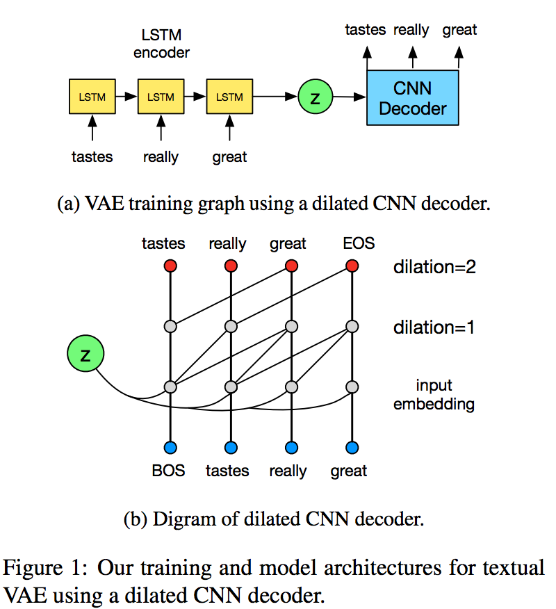
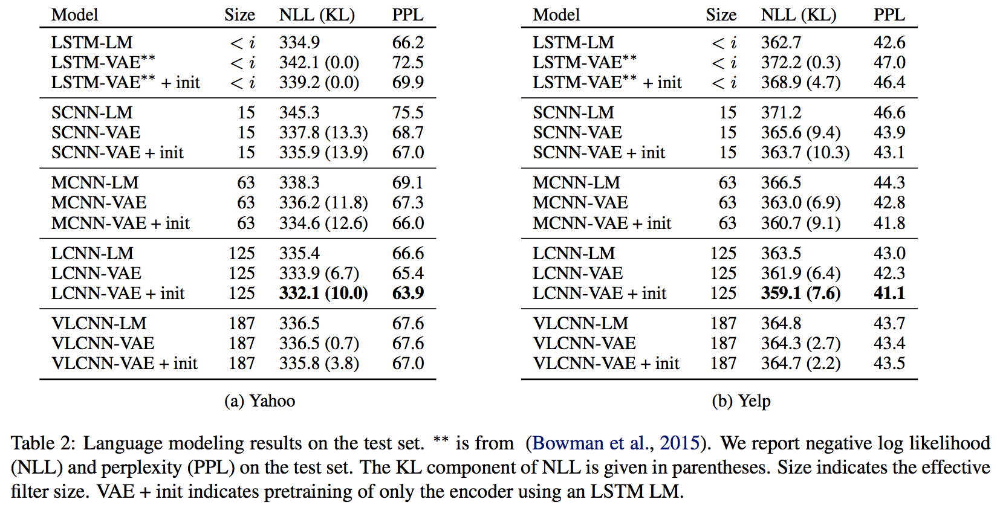
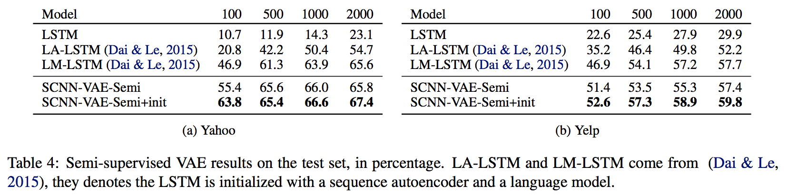
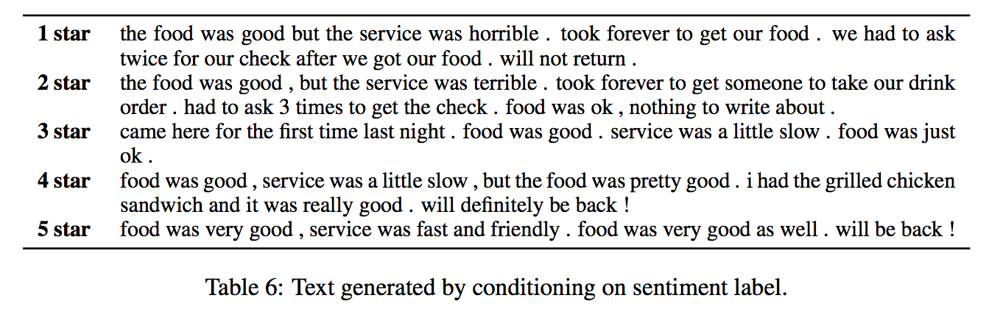

Improved Variational Autoencoders for Text Modeling using Dilated Convolutions
Мотивация
Речь пойдёт про вариационные автоэнкодеры для текста, что помогает, например, в unsupervised режиме находить хорошие фичи. Однако, если делать такой VAE по-наивному, то есть используя RNN энкодер и RNN декодер, то многие авторы рапортуют трудности обучения. На самом деле, проблема в том, что RNN уже достаточно мощная модель сама по себе и в состоянии моделировать языковую модель без дополнительной информации (в самом деле, любое распределение $p(x_1, \dots, x_N)$ представляется в виде $\prod_j p(x_j | x_1, \dots, x_{j−1})$, а рекурретные сети моделируют именно такие распределения).
Идея
Соответственно, раз обычные RNN-декодеры такие мощные, давайте заменим их на что-нибудь попроще. Таким чем-нибудь попроще авторы выбрали "дырявые свёртки" (dilated convolutions, чей дебют произошёл в статье про WaveNet, как я понимаю, не путать с strided convolutions). Как я понимаю, причина такого выбора в том, что даже относительно неглубокий декодер будет иметь достаточно широкую область видимости, т.е. уметь моделировать достаточно протяжённые локальные зависимости. Ожидаемо, путём увеличения глубины такого декодера мы будем увеличивать его мощность.

Авторы расматривают не только сам VAE, но и semi-supervised learning на его основе. Кроме того, такая модель умеет думать о метках класса, поэтому её естественно использовать для кластеризации, что авторы и делают.
Эксперименты
В качестве энкодера была взята обычная LSTM, а в качестве декодера – LSTM бейзлайн и 4 свёрточно-дырявых декодера разной глубины: маленький, средний, большой и очень большой (с областями видимости 16, 63, 125 и 187, соответственно). У LSTM бейзлайна получилась неплохая перплексити на задаче моделирования языка (на датасетах отзывов Yelp'а и Yahoo ответов), но он игнорировал скрытый код. В целом виден паттерн: чем меньше (и слабее) декодер, тем активнее он использует скрытый код, но тем сложнее ему выучить хорошую языковую модель. Оптимальным декодером получился большой свёрточно-дырявый, а очень большой работал хуже и код игнорировал.

Собственно, зачем это всё делалось: хочется иметь хорошее скрытое представление (код), которое было бы полезно в других задачах. Для начала авторы делают его двумерным и показыают, как там топики (которые есть в датасете) кластеризуютя автоматически. Потом начинается semi-supervised learning, когда авторы на смешном количестве размеченных примеров (от 100 до 2000) довольно успешно (относительно существующих методов, сравнения с обучением "с нуля" не было) обучают supervised модель для классификации на 5 или 10 классов.

Кроме того, в самом конце есть маленький примерчик того, как включение информации о метках класса в модель помогает в итоге генерировать (VAE же генеративная модель!) семплы, обуславливаясь на этот самый класс.

Резюме
Простая идея, хорошие эксперименты, мне понравилось. Правда, я бы хотел посмотреть на такие же эксперименты с CNN декодером на обычных свёртках – receptive field у рассмотренной архитектуры, кажется, всё же излишне большой для текста.